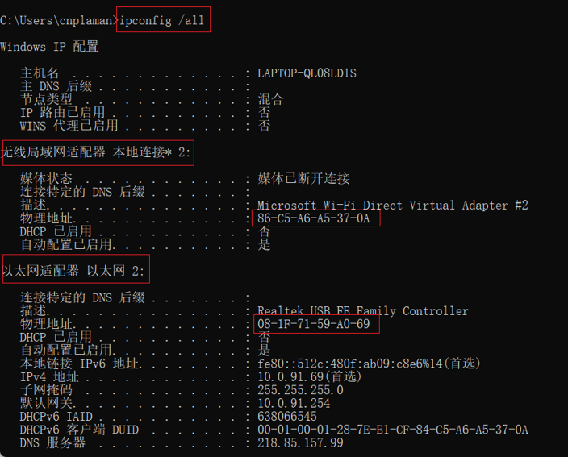
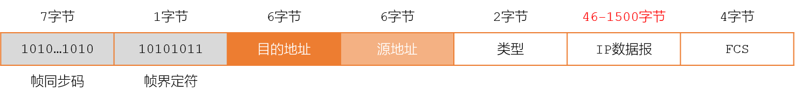

链路层寻址 MAC
- 概述 Overview
- MAC - Medium Access Control
- 又叫物理地址、硬件地址，固化在适配器的ROM中
- IEEE802.3规定MAC地址为长度6个字节，共48位
- 高24位(前3个字节)是OUI - Organization Unique Identifier，由注册机构RA分配
- 低24位(后3个字节)是EUI - Extended Unique Identifier，由公司指定
- 每4个比特写成一个16进制，共12个16进制数，每2个16进制数之间用冒号隔开
- 48位=24位OUI+24位EUI
- 更多信息，请访问 MAC地址查询
- 分类 Type
- 单播 帧unicast：一对一
- 广播 帧broadcast：一对全体
- 多播 帧multicast：一对多
- 帧结构 Frame
- 标准
以太网V2标准，使用最广泛
IEEE 802.3标准
- 长度：最小64字节



实际的帧要比MAC帧多8个字节
因为帧之间有传输间隙，所以不需要帧结束的界定
- Reading